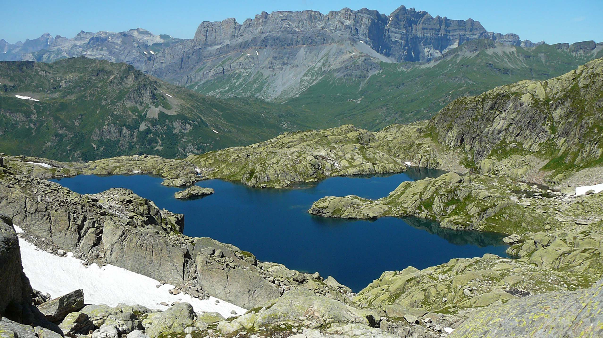

Domaine Skiable Brévent Flégère
Skiez face au Mont Blanc
Ce domaine skiable est idéalement situé en versant sud, juste en face du Mont Blanc. Ce domaine est composé de deux principaux pôles:
Planpraz Brévent: accessible à partir de la télécabine de Planpraz depuis le centre de Chamonix. Vous y trouverez un petit espace débutant au dessus de Planpraz, mais aussi des pistes bleue et rouges bien sportives côté Col Cornu. Et enfin ne manquez pas, si vous en avez le niveau, la mythique piste noire Charles Bozon au départ du Brévent.
Flégère: accesible à partir de la télécabine de la Flégère depuis le village des Praz. Vous y trouverez un vaste espace débutant à proximité de la gare d'arrivée de la télécabine. De magnifiques pistes rouges et noires sont aussi disponibles au départ de l'Index et du téléski de la Floria.
Les deux domaines sont reliés entre eux par un téléphérique de liaison.
Planpraz Brévent: accessible à partir de la télécabine de Planpraz depuis le centre de Chamonix. Vous y trouverez un petit espace débutant au dessus de Planpraz, mais aussi des pistes bleue et rouges bien sportives côté Col Cornu. Et enfin ne manquez pas, si vous en avez le niveau, la mythique piste noire Charles Bozon au départ du Brévent.
Flégère: accesible à partir de la télécabine de la Flégère depuis le village des Praz. Vous y trouverez un vaste espace débutant à proximité de la gare d'arrivée de la télécabine. De magnifiques pistes rouges et noires sont aussi disponibles au départ de l'Index et du téléski de la Floria.
Les deux domaines sont reliés entre eux par un téléphérique de liaison.
La Flégère
Piste bleue Combe de Vioz
Pistes rouge Crochues et noire Floria
Besoin d'une petite pause ?
Plusieurs points de restauration sont à votre disposition sur le domaine skiable, en partiCulier à proximité de Planpraz et de la Flégère, mais aussi au sommet de Brévent ou de l'Index.
Au sommet de l'Index
Télésiège du Col Cornu
Départ des pistes au sommet du télésiège du Col Cornu
Magnifiques randonnées en été
L'été, de nombreuses randonnées sont accessibles sur le domaine Brévent Flégère. Voici quelques exemples:
-le grand balcon sud entre Planpraz et la Flégère. Difficulté: facile
-le lac Cornu au départ de Planpraz. Difficulté: moyenne
-le lac Blanc au départ de la Flégère. Difficulté: moyenne
-le lac Blanc au départ du Col des Montets. Difficulté: difficile
-le grand balcon sud entre Planpraz et la Flégère. Difficulté: facile
-le lac Cornu au départ de Planpraz. Difficulté: moyenne
-le lac Blanc au départ de la Flégère. Difficulté: moyenne
-le lac Blanc au départ du Col des Montets. Difficulté: difficile
Sentier vers le Lac Cornu

le Lac Cornu
le Lac Blanc